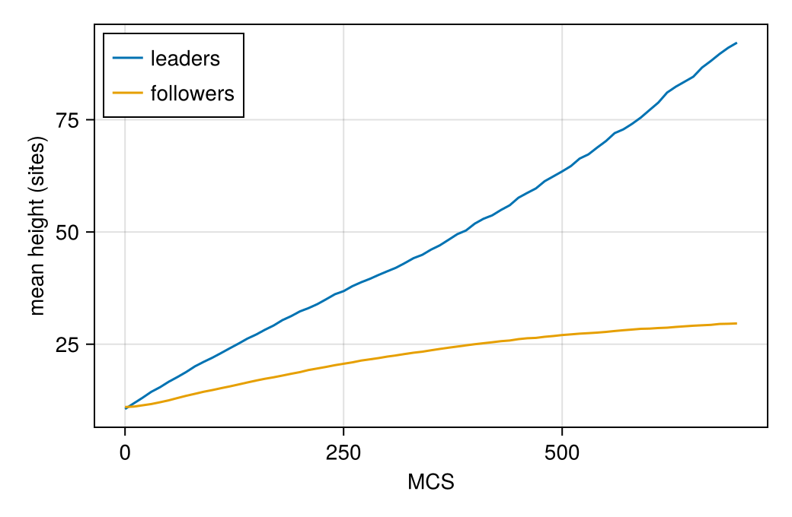

Leader–follower tumour invasion
Tumours invade the surrounding tissue in several ways: as single cells, as fingers or as detached clusters. In many carcinomas a minority of leader cells, which sense and follow cues in the matrix, pulls a majority of follower cells behind it. Akeeb, Marcus and Jiang (2026) model a slab of followers seeded with leaders, and map how adhesion between the two kinds, leader motility and proliferation decide the invasion pattern. This page builds that model.
What you will learn
- how to declare per-cell and per-site variables, and set them in the starting state;
- how a drive acts only on copies that involve one kind of cell;
- how two constraints keep cells connected and alive;
- how
@after_mcsupdates grow cells and run their clocks, and how@dividesplits a cell, with a random division time; - how a layout builds a slab of cells seeded with single-site leaders.
The cell sorting and vasculogenesis pages explain the parts used here before (contacts, area constraints, drives).
The paper
- S. Akeeb, A. I. Marcus and Y. Jiang, "Clusters, fingers, and singles: A mechanical landscape of tumor invasion", PLoS Comput. Biol. 22, e1014747 (2026), doi:10.1371/journal.pcbi.1014747.
The paper's energy, Eq. (1), is
\[H = \sum_{\langle i,j \rangle} J\big(\tau(\sigma_i), \tau(\sigma_j)\big)\,(1 - \delta_{\sigma_i \sigma_j}) + \sum_\sigma \lambda_V (V_\sigma - V_{T,\sigma})^2 - \sum_x \lambda\, c(x)\, \delta_{\sigma(x), \text{LC}} ,\]
with a per-cell target volume $V_{T,\sigma}$ and a cue $c(x)$ that leader cells (LC) climb. Copies are accepted with the Metropolis rule, Eq. (2). The authors ran the model in CompuCell3D and published the code; where code and text differ, the model follows the code, and the steps below say so.
The paper run
The finished model, built step by step below, run at the paper's size, with the paper's starting state, parameters and run length. It is computed outside the docs build:
Paper run — Akeeb, Marcus & Jiang (2026), multimodal sample (J_LF = 2, μ = 24, PP = 0.5): 500×300, 701 MCS (paper: 701 CC3D steps, MCS 0–700), seed 1. μ = 24 is passed explicitly (the constructor default is 30).
The rest of this page builds the model and runs it at a size that takes seconds.
using Potts, PottsModelsStep 1: the lattice
@structural_parameters begin
lattice = (500, 300)
end
@lattice Lattice(lattice; boundary = (Periodic(), Closed()), neighborhood = Moore(1))
@relations proposal = VonNeumann(1)500 × 300 sites, periodic along $x$ and closed along $y$ (paper p. 4). Contacts use the 8 neighbours and copies the 4 nearest, as in the authors' CompuCell3D files.
Step 2: cell kinds
@kinds medium leader followerStep 3: parameters
@parameters begin
λᵥ = 2.0
μ = 30.0
T = 10.0
V_max = 20.0
clock_min = 75.0
clock_spread = 50.0
J[kind, kind] = [0.0 2.0 10.0; 2.0 16.0 2.0; 10.0 2.0 5.0]
endThe values of the paper's Table 1: $\lambda_V = 2$, $T = 10$ and the contact energies medium–leader 2, medium–follower 10, leader–leader 16 and follower–follower 5. The leader–follower energy $J_{LF}$ (here 2) is the paper's main scanned parameter, over $[-5, 5]$; akeeb_contacts(J_LF) builds the table for any value. μ is the chemotaxis strength (the paper's $\lambda$). Its default here is 30; the paper's value is 24, so we pass μ = 24 when we build the model below. V_max, clock_min and clock_spread govern growth and division (Steps 8 and 9).
Step 4: per-cell and per-site variables
@variables begin
V_target(cell) = 10.0
clock(cell) = -1.0
rate(cell) = 0.0
cue(site) = 0.0
endEach cell carries its own target volume, a mitotic clock and a growth rate, and each site a value of the cue. The values after = are defaults; the starting state overrides them per cell (below). A clock of $-1$ marks a cell that does not proliferate.
Step 5: the energy
cells => λᵥ * (volume - V_target)^2The domain cells (with no kinds listed) covers every cell, leaders and followers. The target is the cell's own variable V_target, not a parameter: the first two terms of Eq. (1).
contacts => J[kind, kind′]Step 6: the cue drive
@drive copy => ifelse((kind[new] == leader) || (kind[old] == leader), -μ * (cue[target] - cue[source]), 0.0)Eq. (1)'s third term is a potential summed over leader sites. The authors' code applies it as CompuCell3D's default chemotaxis instead: each copy whose gaining (new) or losing (old) cell is a leader changes $\Delta H$ by $-\mu\,(c(\text{target}) - c(\text{source}))$. The model follows the code. With the cue $c = y - 1$ (set in the starting state, as in the paper, p. 6) leaders are biased upwards, into the empty matrix.
Step 7: constraints
@constraint connectivity(leader, follower)
@constraint no_extinctionconnectivity(leader, follower) forbids copies that would split a leader or a follower: the cell losing the target site must keep its neighbours of that site in one arc (CompuCell3D's Connectivity plugin, used by the authors). no_extinction forbids copies that take a cell's last site.
Step 8: growth and clocks
@after_mcs begin
V_target ~ ifelse(Pre(V_target) < V_max, Pre(V_target) + rate, Pre(V_target))
clock ~ ifelse(Pre(clock) >= 0, Pre(clock) + 1, Pre(clock))
end@after_mcs updates run after every MCS. Pre(x) is the value before the update. Each cell's target volume grows by its rate (0.015 per MCS for followers, the paper's $f_{\text{grow}}$, Table 1) until it reaches V_max = 20, and running clocks ($\ge 0$) tick.
Step 9: division
@divide cells(follower) when = (clock >= 0) && (volume > V_max) && (clock > clock_min + clock_spread * rand()),
along = RandomPlane(), V_target => Split(), clock => 0.0A follower with a running clock divides when its volume exceeds V_max (twice the initial target) and its clock exceeds $75 + 50\,U$, with $U$ a fresh uniform draw every MCS (rand()). This is the authors' code. The paper's text describes one draw per cycle from $U(25, 125)$; the code's per-MCS test fires between clock 76 and 125. The cell is cut along a random plane, the target volume is split between the daughters (Split()), and both clocks restart at 0.
Step 10: the sweep
@sweep Metropolis(; temperature = T)
endThe whole model
@potts_model LeaderFollowerInvasion begin
@structural_parameters begin
lattice = (500, 300)
end
@lattice Lattice(lattice; boundary = (Periodic(), Closed()), neighborhood = Moore(1))
@relations proposal = VonNeumann(1)
@kinds medium leader follower
@parameters begin
λᵥ = 2.0
μ = 30.0
T = 10.0
V_max = 20.0
clock_min = 75.0
clock_spread = 50.0
J[kind, kind] = [0.0 2.0 10.0; 2.0 16.0 2.0; 10.0 2.0 5.0]
end
@variables begin
V_target(cell) = 10.0
clock(cell) = -1.0
rate(cell) = 0.0
cue(site) = 0.0
end
@energy begin
cells => λᵥ * (volume - V_target)^2
contacts => J[kind, kind′]
end
@drive copy => ifelse((kind[new] == leader) || (kind[old] == leader), -μ * (cue[target] - cue[source]), 0.0)
@constraint connectivity(leader, follower)
@constraint no_extinction
@after_mcs begin
V_target ~ ifelse(Pre(V_target) < V_max, Pre(V_target) + rate, Pre(V_target))
clock ~ ifelse(Pre(clock) >= 0, Pre(clock) + 1, Pre(clock))
end
@divide cells(follower) when = (clock >= 0) && (volume > V_max) && (clock > clock_min + clock_spread * rand()),
along = RandomPlane(), V_target => Split(), clock => 0.0
@sweep Metropolis(; temperature = T)
endWe run it on the paper's 500 × 300 lattice. Every default is the paper's value except the chemotaxis strength, which we set to the paper's 24:
dims = (500, 300)
@named invasion = LeaderFollowerInvasion(; lattice = dims, μ = 24.0)PottsSystem invasion on 500×300 (2D)
kinds: medium, leader, follower
parameters: λᵥ, μ, T, V_max, clock_min, clock_spread, J
variables: V_target(cell), clock(cell), rate(cell), cue(site)
energy cells => ((-V_target(t) + volume)^2)*λᵥ
energy contacts => Potts.at2(J, kind, kind′)
drive copy => ifelse((Potts.at(kind, new) == 1) | (Potts.at(kind, old) == 1), -(-Potts.at(cue(t), source) + Potts.at(cue(t), target))*μ, 0.0)
constraint connectivity[1, 2]
constraint no_extinctionInt64[]
@after_mcs V_target(t) ~ ifelse(Pre(V_target(t)) < V_max, Pre(V_target(t)) + rate(t), Pre(V_target(t)))
@after_mcs clock(t) ~ ifelse(Pre(clock(t)) >= 0, 1 + Pre(clock(t)), Pre(clock(t)))
divide cells(2) when (clock(t) >= 0) & ((V_max < volume) & ((clock_min + clock_spread*Potts.random_uniform(1)) < clock(t)))
sweep: metropolis(temperature = T)The starting state
The paper starts from a slab of followers 21 sites high across the whole width, in which a quarter of all cells are leaders (p. 5). The authors' code tiles the slab with 3 × 3 followers, then draws random sites and turns each draw that lands on a follower into a new one-site leader, until leaders are a quarter of all cells. Two layout layers say exactly this. Tiling fills a region with boxes. InsertUntil inserts one-site cells into cells of the given kinds until a stop rule holds; misses = :count counts a draw that misses (lands on a leader) towards the quota, as the authors' loop does. overlay paints the layers in order:
slab = overlay(Tiling((3, 3); region = (1:500, 1:21), kinds = [:follower], partial = :clip),
InsertUntil(:leader; into = [:follower], fraction = 1 // 4, seed = 0x5cd2609, misses = :count,
region = (2:500, 2:20), splits = :allow))
point = layout(slab, dims)
kinds = point[2].second
count(==(:leader), kinds), count(==(:follower), kinds)(383, 1169)1169 followers, as in the authors' files, and about 382 leaders painted for 390 counted. splits = :allow silences a warning: two leaders inside one follower can cut it in two, which the published slab also does. This layout ships as akeeb_layout:
point[1].second == layout(akeeb_layout(), dims)[1].secondtrueakeeb_state paints it and adds the per-cell and per-site values: half of the followers get a running clock, drawn from $0, \dots, 74$ (the paper's proliferation fraction $PP$, here 0.5), followers grow at 0.015 per MCS, and the cue is $y - 1$:
u0 = akeeb_state()
clocks = u0[3].second # the pairs are ownership, kind, :clock, :rate, :cue
count(>=(0), clocks) / count(==(:follower), u0[2].second)0.504704875962361Solving
The paper runs 700 MCS. Cells are born during the run, so the problem reserves room for them with capacity:
prob = PottsProblem(invasion, u0, (0, 700); seed = 1, capacity = 6000)
sol = solve(prob, SequentialCPM(); saveat = 0:10:700)
sol.stats.lifecycle.divisions587The run as a movie
Leaders are red and followers green, as in the paper's Fig. 4, on a white matrix; boundaries = true outlines each cell:
using MakiePotts, CairoMakie
record_potts("akeeb/invasion.mp4", sol; framerate = 15, title = "Leader–follower invasion", figure = (; size = (640, 420)),
plot = (; boundaries = true, category_palette = [:red3, :forestgreen], medium_color = :white))Leaders climb out of the slab, many of them as single cells, and the growing followers advance behind them in fingers.
Measuring the invasion
Each saved state holds the owner array u.σ and each cell's kind u.cell.kind (1 leader, 2 follower). The mean height of each kind's sites shows leaders moving ahead of the followers:
using Statistics: mean
mean_height(u, k) = mean(I[2] for I in CartesianIndices(u.σ) if u.σ[I] > 0 && u.cell.kind[u.σ[I]] == k)
CairoMakie.activate!(type = "png")
fig = Figure(size = (520, 340))
ax = Axis(fig[1, 1]; xlabel = "MCS", ylabel = "mean height (sites)")
lines!(ax, sol.t, [mean_height(u, 1) for u in sol.u]; label = "leaders")
lines!(ax, sol.t, [mean_height(u, 2) for u in sol.u]; label = "followers")
axislegend(ax; position = :lt)
fig
The paper classifies the final fronts into fingers, single cells and detached clusters; PottsModels.Analysis has the tools for this (column tops of the front, peak finding, the cell contact graph).
Differences from the paper
The model follows the authors' CompuCell3D code where it differs from the text:
| Paper text | Here (the authors' code) | |
|---|---|---|
| Leader cue | a potential $-\lambda \sum_x c(x)$ over leader sites (Eq. (1)) | CompuCell3D's per-copy chemotaxis, $-\mu\,(c(\text{target}) - c(\text{source}))$ when a leader gains or loses the site |
| Leaders at the start | 25% of the followers "reassigned" (p. 5) | one-site leaders inserted into followers; missed draws counted, so about 382 painted for 390 counted |
| Division time | one draw from $U(25, 125)$ MCS per cycle (p. 6) | a fresh test every MCS: clock $> 75 + 50\,U$ |
| Neighbourhoods | not stated | contacts over 8 neighbours, copies from 4 (CompuCell3D orders 2 and 1) |
| $y$ boundary | not stated | a closed wall (the CompuCell3D default) |
| Connectivity | not mentioned | every cell kept in one piece (CompuCell3D Connectivity) |
| Time | 700 MCS (701 CompuCell3D steps) | 700 MCS |
| Chemotaxis strength | $\lambda = 24$ | the constructor's default is μ = 30; pass μ = 24, as this page does |
The lattice, temperature, contact energies, volume constraint, growth rate and division size are the paper's (Table 1). The leader–follower energy is 2 here; the paper scans it from −5 to 5.
This model ships as AkeebInvasion
PottsModels exports this model as AkeebInvasion; the test suite checks that it compiles to the same code and defaults as LeaderFollowerInvasion above.
@named akeeb = AkeebInvasion(; μ = 24.0)PottsSystem akeeb on 500×300 (2D)
kinds: medium, leader, follower
parameters: λᵥ, μ, T, V_max, clock_min, clock_spread, J
variables: V_target(cell), clock(cell), rate(cell), cue(site)
energy cells => ((-V_target(t) + volume)^2)*λᵥ
energy contacts => Potts.at2(J, kind, kind′)
drive copy => ifelse((Potts.at(kind, new) == 1) | (Potts.at(kind, old) == 1), -(-Potts.at(cue(t), source) + Potts.at(cue(t), target))*μ, 0.0)
constraint connectivity[1, 2]
constraint no_extinctionInt64[]
@after_mcs V_target(t) ~ ifelse(Pre(V_target(t)) < V_max, Pre(V_target(t)) + rate(t), Pre(V_target(t)))
@after_mcs clock(t) ~ ifelse(Pre(clock(t)) >= 0, 1 + Pre(clock(t)), Pre(clock(t)))
divide cells(2) when (clock(t) >= 0) & ((V_max < volume) & ((clock_min + clock_spread*Potts.random_uniform(1)) < clock(t)))
sweep: metropolis(temperature = T)Its start is akeeb_state(), used above. To scan the leader–follower energy as the paper does, pass a contact table with the state, for example [akeeb_state(); :J => akeeb_contacts(-2.0)].
PottsModels.AkeebInvasion — Function
AkeebInvasion(; name, lattice = (500, 300), J = akeeb_contacts(2.0), μ, …)Leader/follower collective invasion with proliferation (Akeeb, Marcus & Jiang, PLoS Comput. Biol. 22, e1014747, 2026), checked against the authors' CompuCell3D source:
- Kinds. Leaders and followers, both kept connected (CompuCell3D's
Connectivityplugin: the losing cell's sites in the 8-ring must form one arc) and never extinct. - Energies. A per-cell target volume, and adhesion
J = [0 2 10; 2 16 J_LF; 10 J_LF 5](medium, leader, follower). - Migration cue. A static field
cue = y − 1. A copy whose source or target cell is a leader gains−μ Δcue: leaders climb the cue (CompuCell3D's default chemotaxis). - Growth and division. Followers with a mitotic clock (
clock ≥ 0) grow their target volume byrateper MCS up toV_max. They divide when larger thanV_maxand their clock exceedsclock_min + clock_spread · U(0, 1), with a fresh draw every MCS. The division plane is random, the target volume is split, and clocks restart.
Use akeeb_state for the published initial slab.
Faithful to the authors' CompuCell3D model, which differs from the paper's text in the cue term (per-copy chemotaxis, not a potential over leader sites), the leader seeding and the division timing. One CC3D step is 1 MCS here; the source runs 701.
PottsModels.akeeb_state — Function
akeeb_state(; lattice = (500, 300), pp = 0.5, seed = 0x5cd2609, slab = 21,
seeding = :authors) -> operating pointThe published initial slab:
- Cells.
σandkindsarelayout(akeeb_layout(; lattice, seed, slab, seeding), lattice)(seeakeeb_layout): a follower slab of 3×3 tiles overy ≤ slab, then one-site leaders inserted until leaders are a quarter of all cells, under the authors' counting of missed draws (seeding = :authors) or with misses redrawn (:retry). The lattice must be taller than the slab. The counted leader inventory is the leader layer's row oflayout(akeeb_layout(…), lattice; report = true). - Clocks. Each follower has a mitotic clock with probability
pp, drawn uniformly from0:74. Followers haverate = 0.015. - Cue.
y − 1.
All draws use StableRNG, so the state is the same on every Julia version: the leaders StableRNG(seed) (inside InsertUntil), the clocks StableRNG(Potts._substream_seed(seed, :clock)) (a mixed sub-stream, so clocks at consecutive seeds are uncorrelated), one cell at a time in id order (a leader draws nothing).
PottsModels.akeeb_layout — Function
akeeb_layout(; lattice = (500, 300), seed = 0x5cd2609, slab = 21, seeding = :authors)
-> AbstractLayoutThe published initial slab of akeeb_state as a layout value, written with the public layers only:
overlay(Tiling((3, 3); region = (1:X, 1:3cld(slab, 3)), kinds = [:follower], partial = :clip),
InsertUntil(:leader; into = [:follower], fraction = 1 // 4, seed, misses,
region = (2:X, 2:(slab - 1)), splits = :allow))with X = lattice[1].
- Followers. 3×3 tiles fill
y ≤ slab(rounded up to whole tiles), clipped at the right edge, ids row by row withxfastest. - Leaders. One-site leaders go on random follower pixels, drawn over the ranges of the authors' CompuCell3D seeding loop, until leaders are a quarter of all cells.
seedingchoosesmisses::authors(default) givesmisses = :count, the authors' loop: every draw counts one leader toward the quota, a leader is painted only on a hit, and the quota is tested only after a hit. A miss leaves no cell (an empty "ghost" leader), so fewer leaders are painted than counted: at 500×300, ≈ 382 of a counted 390.:retrygivesmisses = :retry: a miss is redrawn, so exactly the quota is painted.
Several leaders inside one follower can cut it in two; that is the published slab, so the leader layer has splits = :allow and painting the layout does not warn.
The layout carries no lattice: painted on a lattice wider than X, the X-wide slab is painted and the rest stays medium. The counted inventory is the leader layer's row of the layout report:
point, report = layout(akeeb_layout(; lattice, seed), lattice; report = true)
t = only(r for r in report if r.type === :InsertUntil)
t.painted, t.misses, t.counted # leaders created, missed draws, the CC3D inventoryPottsModels.akeeb_contacts — Function
akeeb_contacts(J_LF): the adhesion table with leader–follower energy J_LF.